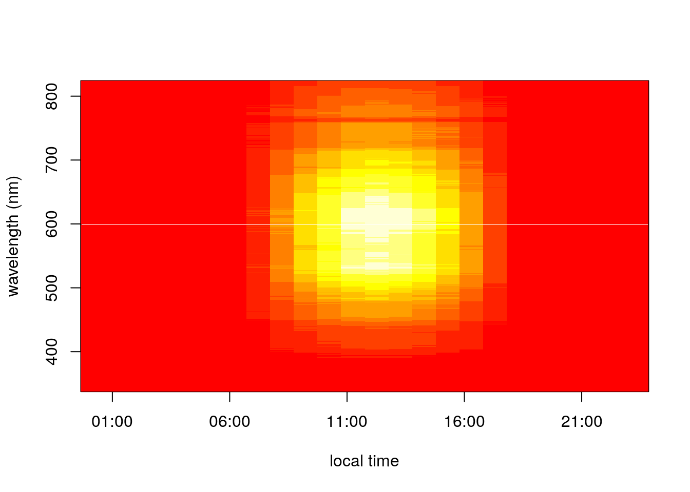
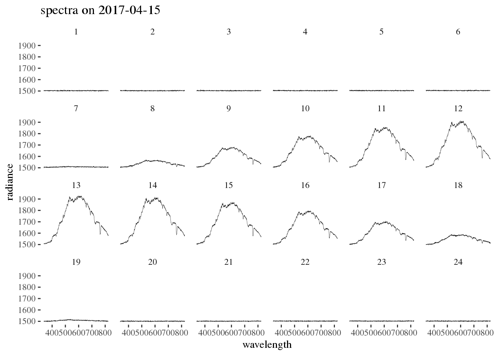

Hyperspectral Data
Calibration Targets
These were collected on April 15 2017 every ~15 minutes
library(ncdf4)
library(dplyr)
hsi_calibration_dir <- '/data/terraref/sites/ua-mac/Level_1/hyperspectral/2017-04-15'
hsi_calibration_files <- dir(hsi_calibration_dir,
recursive = TRUE,
full.names = TRUE)
fileinfo <- bind_rows(lapply(hsi_calibration_files, file.info)) %>%
mutate(size_gb = size/1073741824)
calibration_nc <- nc_open(hsi_calibration_files[200])
a <- calibration_nc$var$rfl_img
#calibration_nc$dim$x$len 1600
#calibration_nc$dim$y$len
x_length <- round(calibration_nc$dim$x$len / 10)
y_length <- round(calibration_nc$dim$y$len * 3/4)
xstart <- ceiling(calibration_nc$dim$x$len / 2) - floor(x_length / 2) + 1
ystart <- ceiling(calibration_nc$dim$y$len / 2) - floor(y_length / 2) + 1
rfl <- ncvar_get(calibration_nc, 'rfl_img',
#start = c(1, xstart, ystart),
#count = c(955, x_length, y_length)
start = c(2, 2, 2),
count = c(1320, 10, 954)
)
x <- ncvar_get(calibration_nc, 'x', start = 100, count = 160)
y <- ncvar_get(calibration_nc, 'y', start = 100, count = 1324)
lambda <- calibration_nc$dim$wavelength$vals
for(i in 1 + 0:10*95){
image(x = x, y = y, z = rfl[i,,],
xlab = 'x (m)', ylab = 'y (m)',
col = rainbow(n=100),
main = paste('wavelength',
udunits2::ud.convert(lambda[i],'m','nm')))
} Meteorological Data
Raw Data
metfile <- "/data/terraref/sites/ua-mac/raw_data/EnvironmentLogger/2017-05-31/2017-05-31_12-19-38_environmentlogger.json"
met <- jsonlite::fromJSON(metfile)
timestamp <- lubridate::ymd_hms(met$environment_sensor_readings$timestamp)
wavelengths <- met$environment_sensor_readings$spectrometer$wavelength[[1]]
spectra <- do.call('rbind', met$environment_sensor_readings$spectrometer$spectrum)
library(dplyr)##
## Attaching package: 'dplyr'## The following objects are masked from 'package:stats':
##
## filter, lag## The following objects are masked from 'package:base':
##
## intersect, setdiff, setequal, unionspectra <- do.call('rbind', met$environment_sensor_readings$spectrometer$spectrum)
#colnames(spectra) <- wavelengths
#rownames(spectra) <- met$environment_sensor_readings$timestamp
image(x = timestamp, y = wavelengths, z = spectra)
library(dplyr)##
## Attaching package: 'dplyr'## The following objects are masked from 'package:stats':
##
## filter, lag## The following objects are masked from 'package:base':
##
## intersect, setdiff, setequal, unionlibrary(readr)
date = '2017-04-15'
load_loggerdata <- function(date){
path <- file.path("/data/terraref/sites/ua-mac/raw_data/EnvironmentLogger", date)
files <- dir(path, full.names = TRUE)
loggerdata <- lapply(files, jsonlite::fromJSON)
timestamp <- combine(sapply(loggerdata, function(x){
t <- x$environment_sensor_readings$timestamp
lubridate::ymd_hms(t)
}))
return(list(data = loggerdata, timestamp = timestamp))
}
extract_downwelling_irradiance <- function(logdata){
wavelengths <- logdata$data[[1]]$environment_sensor_readings$spectrometer$wavelength[[1]]
spectra <- do.call('rbind', lapply(logdata$data, function(x){
do.call('rbind', x$environment_sensor_readings$spectrometer$spectrum)
}
))
# image(x = timestamp, y = wavelengths, z = spectra)
return(list(spectra = spectra, wavelengths = wavelengths, timestamp = logdata$timestamp))
}
extract_logger_met <- function(logdata){
met <- do.call('rbind', lapply(logdata$data, function(x){
tmp_met <- x$environment_sensor_readings
data.frame(par = tmp_met$`sensor par`$value,
co2 = tmp_met$`sensor co2`$value,
sundir = tmp_met$weather_station$sunDirection$value,
pressure = tmp_met$weather_station$airPressure$value,
brightness = tmp_met$weather_station$brightness$value,
rh = tmp_met$weather_station$relHumidity$value,
temp = tmp_met$weather_station$temperature$value,
wind_dir = tmp_met$weather_station$windDirection$value,
wind_speed = tmp_met$weather_station$windVelocity$value)
}))
return(met)
}
env_log_data <- load_loggerdata(date = '2017-04-15')
env_log_spectra <- extract_downwelling_irradiance(env_log_data)
env_log_met <- extract_logger_met(env_log_data)Plots
library(lubridate)##
## Attaching package: 'lubridate'## The following object is masked from 'package:base':
##
## datelibrary(dplyr)
library(tidyr)
time <- env_log_data$timestamp
hourly_index <- 1+0:23*720
time_hr <- time[hourly_index]
hourly_spectra <- env_log_spectra$spectra[hourly_index,]
wavelengths <- env_log_spectra$wavelengths
colnames(hourly_spectra) <- wavelengths
image(x = time_hr, y = wavelengths, z = hourly_spectra,
xlab = 'local time', ylab = 'wavelength (nm)')
spectra_df <- data.frame(hour = 1:24, hourly_spectra)
spectra_long <- spectra_df %>%
gather(key = wavelength, value = radiance, -hour) %>%
mutate(wavelength = as.numeric(gsub("X", "", wavelength)))
colnames(spectra_long)## [1] "hour" "wavelength" "radiance"library(ggplot2)
ggplot(data = spectra_long, aes(x = wavelength, y = radiance)) +
geom_line(size = 0.1) +
ggthemes::theme_tufte() +
facet_wrap(~hour, ncol = 6) +
ggtitle(paste('spectra on', date))
Clowder Geostreams database
Locations with met data
| stream id | name |
|---|---|
| 300 | MAC weather |
| 750 | MAC irrigation |
| 746 | EnvironmentLogger sensor_weather_station |
| 747 | EnvironmentLogger sensor_par |
| 748 | EnvironmentLogger sensor_spectrum |
| 749 | EnvironmentLogger sensor_co2 |
| 1219 | UIUC Energy Farm SE |
| 1222 | UIUC Energy Farm CEN |
| 1223 | UIUC Energy Farm NE |
curl -O spectra.json -X GET https://terraref.ncsa.illinois.edu/clowder/api/geostreams/datapoints?key=Pb3AUSqnUw&stream_id=743
Using the PEcAn atmospheric data utilities
devtools::install_github("pecanproject/pecan",
subdir = 'base/utils', ref = 'develop', dependencies = FALSE)
devtools::install_github("pecanproject/pecan",
subdir = 'base/db')
devtools::install_github("rforge/reddyproc",
subdir = "pkg/REddyProc")
devtools::install_github("pecanproject/pecan",
subdir = 'modules/data.atmosphere',
ref = 'develop')
source("https://raw.githubusercontent.com/PecanProject/pecan/develop/models/biocro/R/met2model.BIOCRO.R")PEcAn Met Workflow
writeLines("
<pecan>
<clowder>
<hostname>terraref.ncsa.illinois.edu</hostname>
<user>user@illinois.edu</user>
<password>ask</password>
</clowder>
</pecan>",
con = "~/.pecan.clowder.xml")
library("PEcAn.data.atmosphere")
library("dplyr")
## download raw data
ne <- download.Geostreams(
outfolder="data",
sitename="EnvironmentLogger sensor_weather_station",
start_date="2016-02-28",
end_date="2016-04-01",
overwrite = TRUE)
## convert to standard
ne_cf <- met2CF.Geostreams(
in.path = "data/",
in.prefix = ne$dbfile.name,
outfolder = "data/cf",
start_date = "2016-03-01", # note date shift to avoid TZ issues
end_date = "2016-04-01",
overwrite = TRUE)
## convert to model specific input
met2model.BIOCRO(
overwrite = TRUE,
in.path = "data/cf",
in.prefix = ne_cf$dbfile.name,
outfolder = "data/biocromet",
lat = 40,
lon = -88,
start_date = "2016-03-01",
end_date = "2016-03-30")
met <- readr::read_csv('data/biocromet/Clowder.UIUC Energy Farm - NE.2016-02-28.2016-04-01.2016.csv')netCDF Files - Hyperspectral images
Sample data
library(ncdf4)
hsi_nc <- nc_open('/data/terraref/sites/samples/vnir_test_small.nc')Met from netCDF files
library(ncdf4)
library(udunits2)
library(lubridate)
for(date in c('2016-06-21', '2016-09-21', '2016-12-21', '2017-03-21', '2017-05-21')){
directory <- file.path("/data/terraref/sites/ua-mac/Level_1/EnvironmentLogger", date)
files <- dir(directory, full.names = TRUE)
spectra_list <- lapply(files, function(x){
metnc <- nc_open(x)
spc <- ncvar_get(metnc, 'flx_spc_dwn')
datetime <- ymd("1970-01-01") +
seconds(ud.convert(ncvar_get(metnc, 'time'), 'day', 's'))
wvl <- ncvar_get(metnc, 'wvl_lgr')
time <- hour(datetime) +
minute(datetime)/60 +
second(datetime)/3600
return(list(spc = spc, wvl = wvl, date = ymd(strftime(datetime, '%Y%m%d')), datetime = datetime))
})
spectra_df <- do.call('cbind',(lapply(spectra_list, '[[', 'spc') ))
dim(spectra_df)
time <- do.call('c',lapply(spectra_list,'[[','datetime'))
wavelengths <- spectra_list[[1]]$wvl
save(spectra_df, time, wavelengths, file = file.path('data', paste0("spectra",date,".Rdata")))
idx <- 1+0:700*24
i <- 1:length(hr)[!is.na(hr)]
library(lubridate)
hr <- hour(time) + minute(time)/60 + second(time)/3600
png(filename = paste0('data/spectra',date,'.png'))
image(x = wavelengths, y = as.numeric(hr[idx]), spectra_df[,idx],
ylab = 'hour of day',
xlab = 'wavelength (nm)',
col = cm.colors(n=100),zlim = c(-1,2.1),
main = paste0('diurnal solar spectral radiation\n',date))
dev.off()
}
library(lubridate)
library(data.table)
library(udunits2)
time <- ncvar_get(metnc, 'time')
wavelengths <- ncvar_get(metnc, 'wvl_lgr')
f_down_spectrum <- ncvar_get(metnc, 'flx_spc_dwn')
library(ggplot2)
ggplot() +
geom_point(aes(wavelengths, f_down_spectrum[,1])) +
geom_line(aes(wavelengths, f_down_spectrum[,1]))
f_down_means <- rowMeans(f_down_spectrum)
ggplot() +
geom_point(aes(wavelengths, f_down_means)) +
geom_line(aes(wavelengths, f_down_means))
print(metnc)